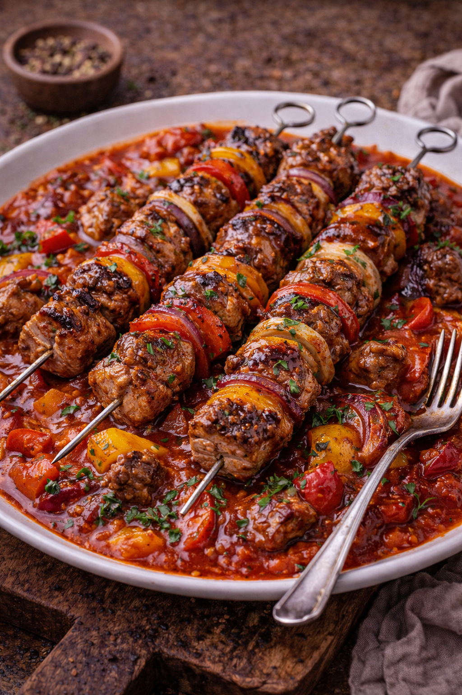

Neue Rezepte, Kategorien, Suche und Sammlungen sind klar gegliedert und schnell erreichbar.Nowe przepisy, kategorie, wyszukiwarka i kolekcje są przejrzyście ułożone i szybko dostępne.
Nutze Suche, Kategorien oder die neuesten Einträge und springe direkt ins Rezept.Skorzystaj z wyszukiwarki, kategorii albo najnowszych wpisów i przejdź od razu do przepisu.
Trends & KlassikerTrendy i klasyki
Automatisch aus gut bewerteten und häufig starken Rezepten zusammengestellt.Automatycznie zestawione z dobrze ocenionych i mocnych przepisów.
Svens FavoritenUlubione przepisy Svena
Automatisch aus persönlichen Rezepten, starken Bewertungen und bewährten Gerichten gewählt.Automatycznie wybrane z osobistych przepisów, mocnych ocen i sprawdzonych dań.
Ostatnio dodane
Die zuletzt ergänzten Rezepte auf einen Blick – ideal, wenn du schnell etwas Neues entdecken willst.Ostatnio dodane przepisy zebrane w jednym miejscu, żeby szybciej coś nowego znaleźć.
Heute kochenGotuj dzisiaj
Kuratiert für typische Momente in deiner Küche – direkt startklar ohne langes Suchen.Wybrane pod typowe sytuacje w kuchni – gotowe do użycia bez długiego szukania.
Deftige KlassikerSolidne klasyki
Aus dem OfenZ piekarnika
Schnelle FeierabendkücheSzybka kuchnia po pracy
Wölpinghausen & KlassikerWölpinghausen i klasyki
Schnelle Einstiege für typische Kochsituationen.Szybkie wejścia do typowych sytuacji kulinarnych.
Rezepte direkt findenZnajdź przepis od razu
Springe direkt in wichtige Bereiche oder filtere nach deinen Hauptkategorien.Przejdź od razu do ważnych obszarów albo filtruj według głównych kategorii.
Direkt in die wichtigsten Rezeptwelten springen.Przejdź od razu do najważniejszych światów przepisów.
KategorienKategorie
Alle Hauptbereiche auf einen Blick – zum Stöbern, Filtern und schnellen Finden.Wszystkie główne obszary w jednym miejscu – do przeglądania i szybkiego wyboru.
InhaltsverzeichnisSpis treści
Direkter Sprung zu jedem Rezept – besonders praktisch bei einer großen Sammlung.Bezpośredni skok do każdego przepisu – szczególnie przydatny przy dużej kolekcji.
Alle Rezepte auf einen BlickWszystkie przepisy w jednym miejscu
Für diese Suche oder Kategorie wurde nichts gefunden.
Nie znaleziono przepisów dla tego wyszukiwania lub kategorii.